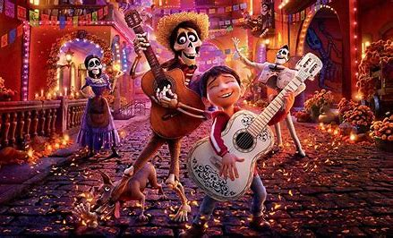

寻梦环游记
门的另一边，有着所有的时间——
米格是一个鞋匠家庭里的小男孩，这位小男孩活泼可爱，米格十分热爱音乐，但他的家
人们却总是阻止他学习音乐。他有一次碰到歌神的吉他后，误入了亡灵世界，见到了曾曾祖父埃克托，
并和他一起揭开了歌神德拉库斯的罪行，让埃克托重新被家人包容、理解，最后米格终于如愿以偿，他
得到了家人们的支持，终于能捧起心爱的吉他，去追逐自己的梦想。

“Remember me， through I have to stay away， remember me
直到这一刻，我才真正理解到死亡的意义，当心跳停止，当葬礼结束，当世界上最后一个记住你的人把你忘记，整个宇宙将不再和你有关系，remember me，不是知道我的名字，而是用爱凝结出我的存在，你爱，故我在
死亡不是生命的终点 遗忘才是
我们的故事只能由我们生前认识的那些人来讲，他们的记忆才管用，如果在活人的世界里没人记得你了，你就会从这个世界消失，我们管这叫终极死亡”。
家人永远是我们的避风塘，他们远比你想象的爱你。珍惜家人陪伴我们的点点滴滴吧，虽然有些家庭可能不会太表达爱意，笨拙无声的，但是没关系啊。我们可以耐心一点，温柔可爱多撒撒娇，勇于表达我们的爱意。